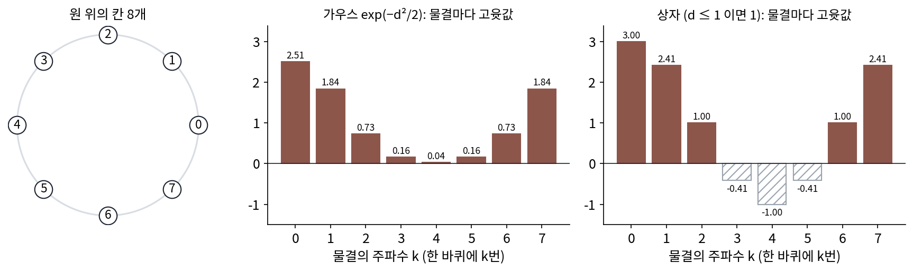
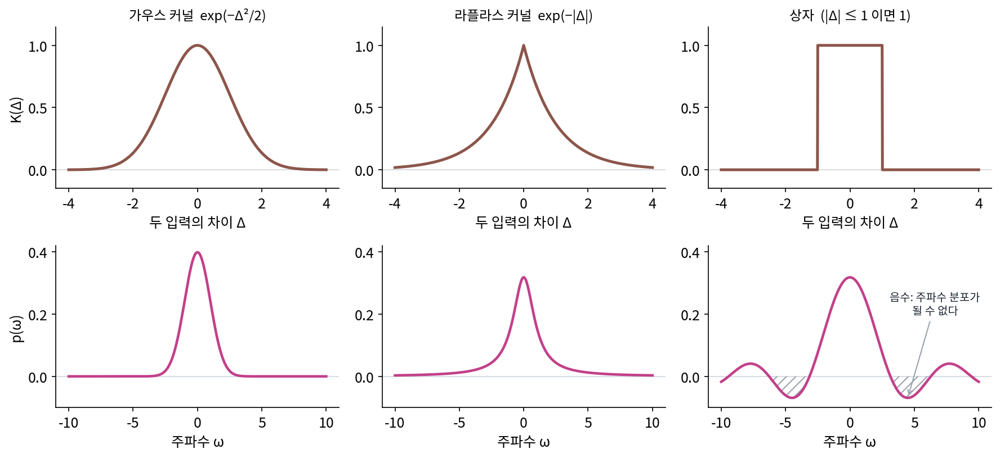

보흐너 정리: 평행이동 불변 커널 함수는 주파수 분포에서 나온다
닮은 정도를 −(x − y)²로 재면, 점 두 개만 골라도 「길이 제곱이 음수인 벡터」가 생겨서 커널 함수가 되지 않았다. 커널 함수가 되려면 점을 몇 개, 어디에 고르든 커널 행렬의 고윳값이 모두 0 이상이어야 한다. 점을 고르는 방법은 끝이 없어 하나씩 확인할 수는 없으니, 함수 모양만 보고 미리 알 길은 없을까?
실마리는 가우시안 커널이 두 입력의 차이 Δ = x − y에만 기대서, 두 입력을 함께 3만큼 옮겨도 닮은 정도가 바뀌지 않는다는 데 있다. 평행이동한 뒤 곱하나 곱한 뒤 평행이동하나 결과가 같은 행렬은 사인·코사인 물결을 고유벡터로 가진다는 것을 평행이동 대칭으로 보았다(원형으로 놓인 칸에서는 이산 푸리에 변환의 물결들이 고유벡터이고, 고윳값은 행렬 첫 줄의 이산 푸리에 변환이다). 그렇다면 차이에만 기대는 커널 함수의 고윳값도 물결마다 하나씩 읽을 수 있을 것이다.
역사: 양의 정부호 함수
「어떤 점들을 골라도 그 점들의 표가 고윳값 0 이상인 행렬이 되는 함수」는 커널 방법보다 훨씬 먼저 해석학의 물음이었다. 이런 함수를 지금은 양의 정부호 함수라 부른다. 1923년 막시밀리안 마티아스(Maximilian Mathias)가 논문 「양의 푸리에 적분에 대하여(Über positive Fourier-Integrale)」에서 이런 함수를 정의하고 성질을 연구했다. 함수 하나를 시험하려면 점을 고르는 모든 방법을 거쳐야 하니, 쓸 만한 판정법이 필요했다. 1932년 뮌헨 대학에서 강의하던 보흐너(Salomon Bochner)는 책 『푸리에 적분 강의(Vorlesungen über Fouriersche Integrale)』에서 답을 냈다. 이어진 함수가 양의 정부호 함수인 것은 그 함수가 음수가 없는 어떤 분포의 푸리에 변환일 때, 그리고 그때뿐이라는 것이다. 이듬해 1933년 나치 정부의 공무원법으로 유대인 교수들이 자리를 잃자 보흐너는 독일을 떠나 미국 프린스턴으로 옮겼다. 그의 정리는 그 뒤 확률론에서 「특성 함수」를 다루는 기본 도구가 되었고, 70여 년 뒤 커널 방법을 빠르게 만드는 열쇠로 다시 불려 나왔다.
원 위의 칸 여덟 개로 시험하기
손으로 해 볼 수 있게 칸 여덟 개를 원 위에 놓자. 칸 i와 칸 j의 거리는 원을 따라 잰 칸 수 d(0에서 4)다. 닮은 정도를 두 가지로 재 보자. 하나는 가우시안 커널 e−d²/2, 다른 하나는 「바로 옆 칸까지는 1, 그 밖은 0」인 상자 꼴이다. 둘 다 차이에만 기대므로 8 × 8 표의 줄마다 같은 숫자가 한 칸씩 밀려 있다.
| 거리 d | 0 | 1 | 2 | 3 | 4 |
|---|---|---|---|---|---|
| 가우스 e−d²/2 | 1 | 0.607 | 0.135 | 0.011 | 0.000 |
| 상자 | 1 | 1 | 0 | 0 | 0 |
이런 표의 고유벡터는 원을 k번 도는 물결들이고, 물결 k의 고윳값은 첫 줄의 이산 푸리에 변환이다. 상자 꼴의 첫 줄 (1, 1, 0, 0, 0, 0, 0, 1)이면 물결 k의 고윳값은 1 + 2 cos(2πk/8)이다. k = 4, 칸마다 부호가 바뀌는 물결 (1, −1, 1, −1, …)에서 1 + 2 cos π = −1이 된다. 실제로 이 물결에 상자 표를 곱하면 자기 자신의 −1배가 나오고, 이 물결로 잰 「길이 제곱」은 −8이다. 상자 꼴은 커널 함수가 아니다. 가우스 쪽은 여덟 고윳값이 2.506, 1.842, 0.730, 0.158, 0.036으로 모두 양수다(k와 8 − k는 같은 값).

물결마다의 고윳값이 바로 「그 주파수의 물결을 커널 함수가 얼마나 담고 있나」다. 고윳값이 모두 0 이상이면 커널 함수는 물결들을 음수 없는 무게로 섞은 것이고, 하나라도 음수면 그 물결을 「빼서」 만든 것이라 내적이 될 수 없다. 칸 대신 이어진 직선에서는 정수 주파수 k 대신 이어진 주파수 ω를 쓰고, 합이 적분이 된다.
이어진 커널 함수 K(Δ)가 커널 함수인 것은 그 주파수 분포 p(ω)가 어디서도 음수가 아닐 때, 그리고 그때뿐이다. 이 판정을 보흐너 정리 (차이에만 기대는 커널 함수 = 음수 없는 주파수 분포의 푸리에 변환 / Bochner’s theorem)라 한다. 점을 끝없이 골라 보는 대신 푸리에 변환 한 번으로 판정한다.
가우시안 커널 e−Δ²/2ℓ²의 주파수 분포는 평균 0, 표준편차 1/ℓ인 정규분포다. 폭이 넓은 가우시안 커널은 느린 물결만 담고, 폭이 좁은 가우시안 커널은 빠른 물결까지 담는다. 꺾인 봉우리 꼴인 라플라스 커널 e−|Δ|/ℓ의 주파수 분포는 ℓ/(π(1 + ℓ²ω²))로, 음수는 없지만 꼬리가 길다. 폭 1에서 |ω| ≤ 3 안에 가우시안 커널은 99.73%를 담는데 라플라스 커널은 79.52%만 담고, |ω| ≤ 10까지 넓혀도 93.65%다. 상자 꼴의 주파수 분포는 sin ω/(πω)라서 ω = 4.49 근처에서 −0.069까지 내려간다. 원 위의 칸에서 본 음수 고윳값이 이어진 직선에서는 음수 주파수 분포로 나온다.

ML에서: RoPE 점수는 주파수 넷짜리 커널 함수다
회전 위치 인코딩(RoPE)은 질의와 열쇠의 성분을 둘씩 묶어 자리 번호만큼 돌리고, 그렇게 돌린 덕에 어텐션 점수가 자리 차이 Δ로만 정해진다. 묶음 j의 내용을 모두 1로 두면 점수는 Σⱼ cos(Δωⱼ)이다. 보흐너 정리의 말로 읽으면, 주파수 분포가 ±ωⱼ 자리에만 무게 1/2씩 놓인 커널 함수다. 무게가 모두 양수이므로 자리 번호를 입력으로 하는 커널 함수가 된다. 묶음마다 내용이 정하는 무게가 바뀌면 커널 함수라는 성질이 언제 깨지는지는 아래 문제 6에서 본다.
문제 4. 요일 닮음표
일주일 7일을 원 위에 놓고 요일끼리의 닮은 정도를 「같은 요일 1, 하루 차이 s, 그 밖 0」으로 정한다(일요일과 월요일도 하루 차이). (가) s = 0.5 일 때 이 7 × 7 표는 커널 행렬이 되는가? (나) 이웃 요일을 더 닮게 쳐서 s = 0.6 으로 올리면? (다) s 를 어디까지 올릴 수 있는가?

닮은 정도를 더 크게 쳐 주는 건데 문제가 생길 리 없죠. 둘 다 돼요.

원 위의 칸 여덟 개에서 했던 방법을 써 봐요. 칸이 일곱 개면 물결 k의 고윳값은 무엇이죠?

첫 줄이 (1, s, 0, 0, 0, 0, s)니까… 물결 k를 넣으면 1 + 2s cos(2πk/7)야.
그럼 cos이 제일 작아지는 k만 보면 되겠네.

k = 3일 때야. cos(6π/7) = −0.901이라 s = 0.5면 1 − 0.901 = 0.099로 양수.

s = 0.6이면 1 − 1.2 × 0.901 = −0.081이에요. 음수가 나왔어요. 더 닮게 쳤을 뿐인데 커널 함수가 아니게 됐네요.

그 음수는 어떤 물결에서 나왔나요?

k = 3이니까 원을 세 번 도는 물결이에요. 칸이 일곱 개라 하루마다 부호가 거의 바뀌어요.

그게 왜 문제야?

이웃끼리 많이 닮았다고 하면서 이웃이 정반대인 물결을 넣으면 길이 제곱이 음수가 되잖아.
그럼 (다)는 어디까지예요?
1 − 2s × 0.901 ≥ 0이어야 하니까 s ≤ 1/(2 cos(π/7)) = 0.555까지예요.

학과 시간표에서 「월요일 수업이랑 화요일 수업은 거의 같다」고 너무 세게 묶으면 요일 사이가 말이 안 맞는 거네요.
문제 5. 상자 두 개를 겹친 삼각형
상자 꼴은 커널 함수가 아니었으니, 이번에는 삼각형 꼴 T(Δ) = 1 − |Δ| (|Δ| < 1), 그 밖 0 을 본다. (가) 원 위의 칸 8개에서 칸 간격을 1/3 로 잡으면 T 의 첫 줄은 (1, 2/3, 1/3, 0, 0, 0, 1/3, 2/3) 이다. 물결마다의 고윳값을 구하라. (나) 이 첫 줄은 상자 꼴 첫 줄 (1, 1, 0, 0, 0, 0, 0, 1) 을 자기 자신과 합성곱(겹쳐 밀며 곱해 더하기)한 뒤 3 으로 나눈 것과 같다. 고윳값과 무슨 관계인가? (다) 선 위에 간격 0.6 으로 놓인 점 6개에서 상자 꼴과 삼각형 꼴 행렬의 가장 작은 고윳값을 견주어라.
(가)는 계산했어요. 물결 0부터 3, 1.943, 0.333, 0.057, 0.333이고 나머지는 대칭이라 같아요. 다 양수예요.
상자 꼴의 고윳값은 3, 2.414, 1, −0.414, −1이었어요. 둘을 나란히 놓고 보면요?

3은 같은데… 2.414랑 1.943은 관계가 안 보여요.
2.414를 제곱해 볼까. 5.828이고, 3으로 나누면 1.943이야.

어, 맞네. 다른 것도 돼? −0.414는?
−0.414²/3 = 0.057, (−1)²/3 = 0.333. 다 맞아. 삼각형의 고윳값은 상자 고윳값의 제곱을 3으로 나눈 거야.
왜 제곱이 나올까요? (나)의 합성곱을 떠올려 봐요.

합성곱은 물결마다 곱하기니까, 자기 자신과 합성곱하면 물결마다 제곱이 돼요. 제곱은 음수가 될 수 없고요.

그래요. 이어진 직선에서도 삼각형의 주파수 분포는 폭이 절반인 상자 꼴(|Δ| < 1/2 에서 1)의 주파수 분포를 제곱한 것에 비례하는 (1 − cos ω)/(πω²)라서 어디서도 음수가 아니에요. (다)는요?
점 6개에서 상자 꼴은 가장 작은 고윳값이 −0.802, 삼각형 꼴은 0.279예요. 모양은 비슷한 뾰족한 꼴인데 한쪽만 커널 함수네요.

해석학에서 「제곱의 합은 음수가 아니다」로 부등식을 증명하던 게 생각나. 무엇이든 자기 자신과 겹치면 커널 함수가 되겠어.
문제 6. RoPE 점수가 커널 함수가 아닐 때
RoPE 점수를 묶음마다 내용이 정하는 무게 hⱼ 를 붙여 Σⱼ hⱼ cos(Δωⱼ) 로 단순하게 적는다. 성분 8개(묶음 넷), 주파수 ωⱼ = 1, 0.1, 0.01, 0.001 이다. (가) h = (1, 1, 1, 1) 이면 자리 차이 Δ = 0, 1, 2 의 점수는? 자리 0~15 의 점수 표는 커널 행렬인가? (나) h = (1, −1, 1, 1) 이면? (다) 어떤 h 면 늘 커널 행렬이 되는가?
(가)는 4, 3.535, 2.564예요. 자리가 멀수록 줄어드니까 닮은 정도로 그럴듯해요. 점수 표의 가장 작은 고윳값은 거의 0, −3 × 10⁻¹⁵예요. 음수니까 커널 행렬이 아닌 거죠?
그 음수의 크기를 봐요. 64비트 실수로 계산하면 얼마만큼은 늘 어긋나죠?
10⁻¹⁵쯤은 반올림 오차예요. 진짜로는 0이네요. 0은 괜찮고요.
0이 왜 나오는지도 알겠어. 물결이 cos과 sin 짝으로 넷, 그러니까 특징이 8개뿐인 내적이라서 16 × 16 표의 순위가 8을 넘을 수 없어. 고윳값 여덟 개는 0이어야 해.

(나)는요?
계산해 보니 가장 작은 고윳값이 −2.948이에요. 이건 반올림 오차라고 할 수 없어요.
그 음수는 어디서 들어왔을까요?
둘째 묶음의 물결을 빼서 만든 점수라서요. 보흐너 정리 말로는 ±0.1 자리의 주파수 분포가 음수예요.
그럼 (다)는요?
hⱼ가 모두 0 이상이면 될 것 같아요.
확인해 볼게. 무작위로 양수 h를 천 번(씨앗 0) 넣어 봤는데 가장 작은 고윳값이 가장 낮을 때도 −8.3 × 10⁻¹⁵, 반올림 오차 크기야.
무게가 다 양수면 주파수 분포도 양수니까 그렇겠네.
그러면 실제 RoPE 점수는 내용에 따라 커널 함수일 때도 아닐 때도 있겠네요. 커널 함수가 아니면 어떤 자리끼리는 「덜 닮았다」를 넘어 서로 밀어내는 점수가 나올 수 있고요.